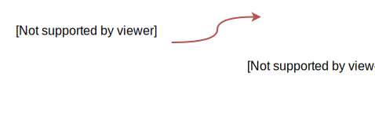

Time Traveling in Distributed Software Systems
Bogdan Roman | Software Engineer | 2015
- EventSourcing
- CQRS
- EventSourcing & CQRS with Akka Persistence
- Scaling out with Akka Clustering
Transactional systems don't scale out easily
Achieving consistency without transactions

EventSourcing
In place updates
| BALANCE | ||
|---|---|---|
| account_id | balance | ... |
| ... | ... | ... |
| 40c13016-9c6... | £200 | ... |
| ... | ... | ... |
In place updates (debit)
| BALANCE | ||
|---|---|---|
| account_id | balance | ... |
| ... | ... | ... |
| 40c13016-9c6... | £100 | ... |
| ... | ... | ... |
EventSourced
| BALANCE | |||
|---|---|---|---|
| account_id | seq | delta | ... |
| ... | ... | ... | ... |
| 40c13016-9c6... | 753... | -£100 | ... |
| ... | ... | ... | |
EventSourced
| BALANCE | ||
|---|---|---|
| account_id | seq | delta |
| 40c13016-9c6... | 1 | +£2000 |
| 40c13016-9c6... | 2 | -£25 |
| 40c13016-9c6... | 3 | -£100 |
| 40c13016-9c6... | 4 | +£15 |
| £1890 | ||
Rows are now Journals
Never Modify
Always Move Forward
CRUD
How the world works
How businesses work
- Banking
- Accounting
- Contracts
Audit Log
Fast writes
Snapshots

CQRS
Command Query Responsibility Segregation
What you get...
- Independent Scaling
- Read / Write Optimisations
- Data Model Complexity
Message Driven Systems
CommandSourcing
EventSourcing
Akka Persistence
trait PersistentActor {
def persistenceId: String
def receiveCommand: Receive
def receiveRecover: Receive
}
sealed trait Command
object Command {
case class CreditAccount(value: BigDecimal) extends Command
case class DebitAccount(value: BigDecimal) extends Command
}
sealed trait Event
object Event {
case class AccountCredited(value: BigDecimal) extends Event
case class AccountDebited(value: BigDecimal) extends Event
case class DebitAccountRejected(reason: String) extends Event
}class BalanceActor extends PersistentActor {
val persistenceId = "40c13016-9c6..."
var balance: BigDecimal = 0
def receiveCommand = {
case CreditAccount(amount) =>
persist(AccountCredited(amount)) { case ev =>
balance = balance + amount
sender() ! ev
}
case DebitAccount(amount) =>
if (balance < amount) sender() ! DebitAccountRejected("not enough money")
else persist(AccountDebited(amount)) { case ev =>
balance = balance - amount
sender() ! ev
}
}
}class BalanceActor extends PersistentActor {
val persistenceId = "40c13016-9c6..."
var balance: BigDecimal = 0
def receiveCommand = {
case cmd@CreditAccount(amount) =>
persist(cmd) { case _ =>
balance = balance + amount
sender() ! AccountCredited(amount)
}
case cmd@DebitAccount(amount) =>
if (balance < amount) sender() ! DebitAccountRejected("not enough money")
else persist(cmd) { case _ =>
balance = balance - amount
sender() ! AccountDebited(amount)
}
}
}class BalanceActor extends PersistentActor {
val persistenceId = "40c13016-9c6..."
var balance: BigDecimal = 0
def receiveCommand = {...}
def receiveRecover = {
case AccountCredited(amount) =>
balance = balance + amount
case AccountDebited(amount) =>
balance = balance - amount
}
}
trait PersistentView {
def persistenceId: String
def viewId: String
def receive: Receive
}
class BalanceView extends PersistentView {
val persistenceId = "40c13016-9c6..."
val viewId = s"$persistenceId-balance"
var balance: BigDecimal = 0
def receive = {
case AccountCredited(amount) =>
balance = balance + amount
case AccountDebited(amount) =>
balance = balance - amount
case GetBalance =>
sender() ! balance
}
}class TransactionCountView extends PersistentView {
val persistenceId = "40c13016-9c6..."
val viewId = s"$persistenceId-count"
var count = 0
def receive = {
case _: Event =>
count = count + 1
case GetTransactionCount =>
sender() ! count
}
}class BalanceActor extends PersistentActor {
val persistenceId = "40c13016-9c6..."
var balance: BigDecimal = 0
def receiveCommand = {
case SaveSnapshot => saveSnapshot(balance)
// ... other cases
}
def receiveRecover = {
case SnapshotOffer(metadata, snap: BigDecimal) => balance = snap
case AccountCredited(amount) => balance = balance + amount
case AccountDebited(amount) => balance = balance - amount
}
}class BalanceView extends PersistentView {
val persistenceId = "40c13016-9c6..."
val viewId = s"$persistenceId-balance"
var balance: BigDecimal = 0
def receive = {
case SaveSnapshot => saveSnapshot(balance)
case SnapshotOffer(metadata, snap: BigDecimal) => balance = snap
case AccountCredited(amount) => balance = balance + amount
case AccountDebited(amount) => balance = balance - amount
// ... other cases
}
}Rich API
- persistAsync
- Custom recovery strategies
- Message deletion
- Management of snapshots
- Batch Writes
- Event Adapters
- PersistentFSM
Plugins
- Journal Plugins
- Snapshot Plugins
- LevelDB
- Community Plugins
Persistence Query
@deprecated("use Persistence Query instead", "2.4")
trait PersistentView
Scaling Out
Akka Clustering
- Allows nodes to be aware of each other
- Decentralised
- Gossip
- Leader: manages cluster membership
Akka Cluster Sharding
- Location Transparency
- Shard Balancing
- Deterministic Message Routing
Start Region
ClusterSharding(system).start(
typeName = "balance",
entityProps = Props[BalanceActor],
settings = ClusterShardingSettings(system),
extractEntityId = extractEntityId,
extractShardId = extractShardId)case class Account(customerId: Long, accountId: Long)
trait AccountRef {
def account: Account
}
case class DebitAccount(account: Account, value: BigDecimal)
extends Command with AccountRef
val numberOfShards = 100
val extractShardId: ShardRegion.ExtractShardId = {
case ref: AccountRef => (ref.account.customerId % numberOfShards, ref)
}
val extractEntityId: ShardRegion.ExtractEntityId = {
case ref: AccountRef => (ref.account.accountId.toString, ref)
}Refer to Region
val balance = ClusterSharding(system).shardRegion("balance")
val account = Account(1, 1)
balance ! DebitAccount(account, 200)Q & A
Thank you for listening
Email me @ Bogdan Roman
This presentation will be soon available on Skills Matter.com at the following link: https://skillsmatter.com/conferences/6862-scala-exchange-2015#skillscasts